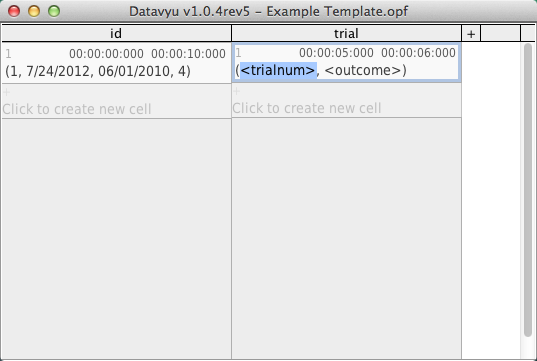

Add Cells¶
Datavyu represents events as cells in the Datavyu spreadsheet. Cells relate to columns because they capture the events that you are coding in that pass.
This tutorial assumes that you have already configured your spreadsheet to include a column. If you have not already created a column in your spreadsheet, start with the Add a Column tutorial.
There are three ways to add cells to a Datavyu spreadsheet: using the spreadsheet menu, using Click to Create New Cell in the body of the spreadsheet, or using the Controller keypad. Controller keys are ideal for creating cells while coding a video. Note that Controller keys give you more options for how to insert cells and onset/offset times.
Tip
Use the tab and shift-tab keyboard shortcuts or the arrow keys to easily
navigate among codes within a cell.
Add Cells Directly in the Body of the Spreadsheet¶
Adding cells to an existing column is simple:
Click in the gray Click To Create New Cell area. A new cell appears with the current playhead time as its onset and placeholders for any codes configured for the column.
Record appropriate values for the codes. For the “trial” column in the example spreadsheet, that means filling out the
<trialnum>and<outcome>codes.Set the cell offset using the keypad on the Controller.
Add Cells from the Controller¶
Adding cells using the controller is even easier than doing so from the spreadsheet:
Navigate to the point in the data source that you want to be the cell’s onset. Use the new cell and set previous offset (``0`) key on the keypad to create a new cell, set its onset based on your location in the data source, and set the previous cell’s onffset to 1 ms prior all in one go.
or
Create a new cell using the new cell (
Enter) key on the keypad. The onset will reflect your location in the data source.